Q1 2026
你的錢，值得一個 懂你的夥伴。
每一個金錢決定都有重量——該辦哪張信用卡、現在該不該進場投資、突然需要一筆錢該怎麼辦。大多數平台丟給你一張比較表，然後說「自己看吧」。
Roo.Cash 不一樣，Roo.Cash 坐在你旁邊。我們是一個以 AI 驅動的理財夥伴，理解你目前的財務狀況、學習你在乎的事情，然後引導你做出適合你生活的決定——而不是套用一個通用的公式。
不管你是 26 歲正在挑第一張信用卡，還是 45 歲正在規劃房貸轉貸，Roo.Cash 都在你所在的地方，用清晰、沉穩、自信的方式與你同行。
「我不知道該從哪裡開始。」使用者帶著問題進來——可能是焦慮、可能是茫然。我們先聽，不急著給答案。
「Roo.Cash 幫我看清楚了。」我們把選項攤開、把利弊說明白，讓使用者自己看見哪一個方案真的適合。
「現在我做每個決定都很有信心。」不是一次性的服務，而是繼續陪伴：下一張卡、下一筆貸款、下一個目標。
袋鼠金融 Roo.Cash（原名「貸鼠先生」）於 2020 年由 Gogolook（股票代碼：6902）推出。一開始，我們只是一個信貸比較工具——但很快發現，台灣使用者真正需要的不是「更多選項」，而是「更安心的選擇」。
從那時起，我們陸續把信用卡、房貸、保險、數位帳戶、證券基金都整合進來，並在 2026 年正式進化為以 AI 為核心的個人理財夥伴。背後始終是同一件事：為普惠金融而生——讓金融資訊不再是門檻，讓每一個使用者，不論收入、年齡、背景，都能做出更安心的金錢決定。
Roo.Cash 不是只在你想理財的時候才出現。我們把使用者的金錢生活拆成三種時刻——每一種都需要不一樣的陪伴方式。
沒有什麼急事的時候，我們陪你看懂利率、回饋、條款這些基本知識。理財不該是危機時才補課的東西，是日常就該被理解的常識。
突然需要一筆錢、突然要轉貸、突然出了狀況——這時候，速度與信任比一切都重要。我們把所有方案攤開，按核准速度與利率排序，讓你 5 分鐘內就能做出有根據的決定。
買房、買車、孩子的教育金、退休——這些長線的事，需要的不是一次性的選擇，而是長期的同行。Roo.Cash 從你的第一張卡，陪你走到你的最後一筆規劃。
Roo.Cash 對信任有點偏執——這不是天生的，而是繼承來的。母公司 Gogolook（股票代碼：6902）成立於 2012 年，旗下的 Whoscall 全球累計超過 8,000 萬次下載，背後是東亞最大的 10 億筆號碼資料庫，以及超過十年的 AI 防詐技術累積。
我們把這份「保護人們不被詐騙」的基因，帶進了個人金融。在金融詐騙日益嚴重的今天，Roo.Cash 不只比較產品，更協助使用者辨識可疑商品、避開高風險方案、保護自己的資產。
取得國際資安標準與隱私資訊標準雙重驗證，符合金管會 OpenBanking 政策規範，比照銀行等級的資安與安控規範。
信用卡、信貸、房貸、數位帳戶、證券、基金、保險——我們和金融機構直接合作，第一手取得方案資料，沒有中間轉手。
8,000 萬次下載 · 10 億筆號碼資料庫 · 超過十年的 AI 防詐技術。Gogolook 執行長榮獲第四屆台灣總統創新獎。
我們在做什麼，又為什麼 要做。
Roo.Cash 是 Gogolook（也就是 Whoscall 背後的那個團隊）旗下的個人理財媒合服務。我們把信用卡、個人貸款、保險、儲蓄與信用建立等產品，整合在一個地方，讓使用者用最少的力氣，找到真正適合自己的方案。
金融資訊不該是門檻，更不該是焦慮的來源。我們的存在，是為了把複雜的金融商品，翻譯成一個普通人也能輕鬆判斷的選擇。
不是比較引擎，不是金融資訊網站，更不是理財網紅。我們是「那個剛好很懂錢的好朋友」——以 AI 為基礎，但本質是一段能長期相處的關係。
過去的 Roo.Cash 是「Smart with ease」——聰明的比較工具。現在的 Roo.Cash，把 AI 的智慧用在一件更深的事：讓你感到被理解、被支持。
信用卡比較與申辦 · 個人貸款媒合 · 保險方案推薦 · 儲蓄與信用建立工具。每一條，背後都是同一個邏輯：把對的產品，連結到對的人。
我們在跟誰說話。
Roo.Cash 不只服務「會理財的人」，也服務「想開始但不知道怎麼開始的人」。台灣大多數人不缺金融商品，缺的是一個能在關鍵時刻，給自己一個清楚答案的夥伴。
第一張信用卡、第一筆投資。需要被引導，但討厭被說教。
房貸、家庭、退休規劃。重視效率、數據與時間，不要寒暄。
臨時需要一筆錢。重視速度與信任，希望被同理而不是被推銷。
銀行、保險公司、信用卡發卡機構。看重精準媒合與品牌信任。
安心 Peace of mind
每一個功能、每一個推薦、每一句話，都應該降低理財焦慮，而非放大它。我們不會製造急迫感來衝點擊——我們創造清晰感來建立信任。如果有人帶著對金錢的壓力來到 Roo.Cash，離開時應該感到更平靜、更清楚。
懂你 Understanding
AI 不只是處理數據——它在傾聽。我們先了解你的處境、你的目標、你的舒適範圍，然後才給出任何建議。個人化不是一個功能，它是整個基礎。不管是第一次投資的新手，還是經驗豐富的投資人，都值得被真正看見。
誠實 Honesty
我們推薦對你最好的方案，而不是佣金最高的那個。當沒有適合你的產品時，我們直說。當一張卡有隱藏費用時，我們標出來。信任是我們唯一真正的資產，所以我們會全力守護它。
陪伴 Companionship
從你的第一張信用卡，到孩子的教育基金，Roo.Cash 和你一起成長。理財不是一次性的決定，它是一段持續的旅程。其他平台是交易型的，Roo.Cash 是關係型的。
Roo.Cash 是一個 什麼樣的「人」。
不是銀行櫃員、不是機器人理專、也不是理財網紅。Roo.Cash 是那個剛好很懂錢的好朋友——就是那種你半夜猶豫要不要辦信貸時，會傳訊息問他的人，而他總能回你一個清楚、沉穩、真正有用的建議。
就像身邊有一個很懂理財的好朋友，每個決定都不再只靠自己。
有智慧但從不居高臨下。引導但不強推。知道什麼時候該說話，什麼時候該傾聽。
穩定、不急躁、永遠有時間給你。談錢，不需要讓人有壓力。
需要深入時展現深度，但從不炫耀。那種讓事情變簡單的聰明。
有同理心但不感傷。理解每一個理財問題背後，都是一個真實的人生。
Roo.Cash 怎麼 說話。
語調應該像一個沉穩、有見識的朋友，從不對你說教。溫暖但不裝可愛。聰明但不冷冰冰。專業但不生硬。
用日常語言溝通。如果某個概念需要專業術語，解釋一次就好，然後繼續。永遠不要用複雜來顯得專業。
不用倒數計時器、不喊「限時優惠！」。理財決定值得被尊重，值得有喘息的空間。
直接說明利弊。「這張卡回饋很好，但年費 $2,000——以下是什麼情況下它划得來。」
對個人說話。「根據你的消費習慣⋯⋯」而不是「大多數人會⋯⋯」。
肯定進步但不過度誇獎。「你已經還完 40% 了——照這個速度，三月就能清償。」
是會傾聽的人。」
這五個原則，本質上都是一件事：先聽，再說。
像一個比你早幾年搞懂理財的朋友。
「第一次投資？這是我們會跟朋友說的建議。」
尊重他們的時間，直接給洞察。
「你的投資組合配置 vs. 風險屬性——這是差距所在。」
省略寒暄，直奔解決方案。
「這裡有 3 個方案，按核准速度排序。我們一起找最適合的。」
用他們的語言溝通。
「我們的 AI 媒合轉換率，比同業平均高出 23%。」
寫「年利率最低 2.05% 起」，不寫「超低利率」。寫「最快 5 分鐘核貸」，不寫「快速申貸」。
立即申請 · 試算 · 查看全部 · 追蹤 · 比較 · 了解更多。不要寫「立即開始您的理財之旅」這種長句。
中文句子裡是「，。：、！？「」（）」；英文獨立段落才用 ,. ()。小數位數從不省略：寫 2.05%，不寫 2.5%。
用「你」（informal），不用「您」。Roo.Cash 是朋友，不是金融顧問。指自己時用「Roo.Cash」或「我們」，「我們」用得很節制。
Logo 是 袋鼠站姿與字標的組合。
袋鼠主體是品牌，字標說明我們是誰。Logo 的留白比 Logo 本身還重要——別讓它擠在邊角。

對外提到母品牌時使用。Roo.Cash 在前，Gogolook 在後，中間以 1px navy 分隔線分開。
與銀行合作活動時使用。等比例縮放，視覺重量相當，不偏向任何一方。
子產品專屬標誌。沿用主標誌的字標骨架，後加產品名，永遠不獨立於 Roo.Cash 之外存在。
五個顏色，一段 從信任到清明的旅程。
Roo.Cash 2026 的色彩系統不是「三色加底」，而是五個有明確分工的顏色。每一個都有自己的故事，連起來就是一段使用者旅程：信任 → 沉穩 → 律動 → 火花 → 清明。Primary 撐起骨架，Secondary 帶來行動感與溫度。
三個主色撐起整個品牌的骨架——Trust 信是內容的肌理，Steady 穩是它的影子，Clear 明是它呼吸的空氣。
兩個輔色負責動作與感覺——Pulse 動是 AI 的脈搏、是 CTA 的呼吸；Spark 火是數字的能量、是利率上揚的信號。
Roo.Cash 的中文用單一字族——思源黑體 Noto Sans TC。標題層用兩個極端的重量配對：800 Bold 撐起主要訊息（重要的字要重），200 Thin + Pulse Teal 是修飾或連接的字（連接的字應該輕）。內文用 400 Regular。數字用 Roboto Condensed Bold，標籤用 Roboto Condensed Regular。
Display 標題用兩個重量配對：Bold 800 撐起主要訊息（重要的字要重），Thin 200 + Pulse Teal 處理連接詞與修飾語（連接的字應該輕）。讓使用者一眼看見主訊息的份量，再讓有色的修飾語浮在其中。內文與數字、標籤各有一個固定重量。
中文用 Noto Sans TC 700/800，英文片段用 Noto Sans TC Thin。同一句裡，黑體穩重，斜體給節奏。
內文用 Noto Sans TC 400，數字穿插用 Roboto Condensed 700 + orange 強調，黑體 + mono 是訊息層的標準。
所有 micro-label、eyebrow、ID、folio 一律用 Roboto Condensed 500，UPPERCASE，letter-spacing 0.12em。
Noto Sans TC（重量 400/500/700/800）+ Roboto Condensed Bold + Roboto Condensed.
為什麼選這個：單一字族黑體靠重量切層級，乾淨、跨平台無折損。重量 800 + 負字距是現在主流 cutting-edge fintech 的標準作法（Linear、Mercury、Robinhood），但用在中文上仍是少見——這就是辨識度。
Noto Sans TC + Fraunces Italic + JetBrains Mono.
為什麼沒選：黑體 + JetBrains Mono 太工程師了；Fraunces 略帶 art-deco 復古，跟「沉穩可信」的金融感有衝突。像 Vercel、像 Linear——但 Roo.Cash 不是 SaaS。
獅尾四季春 / GenSenRounded + Instrument Serif + DM Mono.
為什麼沒選：圓角太友善，金融產品需要的信任感被磨掉了。「好朋友」不是「玩具」。Klee 適合教育、文創；不適合幫人做還款決定。
圖像分三層：功能 · 情緒 · 故事。
圖標負責功能、吉祥物 Roo負責情緒、插畫負責說故事。三者風格上必須是同一家人——一樣的線條、一樣的圓角、一樣不裝可愛。
袋鼠是 Roo.Cash 唯一的決定——不是熊、不是貓、不是抽象的方塊，就是一隻袋鼠。原因很簡單：袋鼠把最珍貴的東西放在育兒袋裡保護著，同時用穩健有力的步伐向前躍進。這就是我們對使用者財務安全感的承諾。
以下是六個視覺方向草案，每一種都有自己的個性。最終由插畫家定稿，但這些方向會幫助我們先決定「Roo 應該長什麼脾氣」。
— v1 placeholder direction · final art TBD by illustrator
會動的、會講話的，都要 克制。
這一章是把所有「會動的、會講話的」視覺元素，整理成一套可以反覆使用的工具。核心原則只有一句：克制。這是一個金融產品，使用者要的是清楚，不是炫技。
信用卡卡面、銀行 logo 都用真實品牌色，無濾鏡、無 B&W、無冷暖調。卡面放在白底上，邊緣有 4–6px 圓角。
不用「微笑亞洲女性看著手機」這類 stock photo。攝影只當被框起來的卡片內容物，不當底圖。
各家銀行年利率比較
比同業平均高出 23 個百分點。
主標題、Roo 吉祥物在 navy 上半。CTA 與支持文字落在 cream 下半。經典的 hero 結構。
整版 cream 底，中央放一個 orange 巨大數字（num-xl，100px+），下方一句 navy 標題。年度活動、白皮書封面。
左欄文字、右欄產品卡片或 Roo 吉祥物。常見於 landing page 與 email 頭。比例 1.2 : 1。
從一張卡片到 一張海報，這樣放就對。
把前面九章的規矩整合起來，看看實際應用在常見的觸點上會是什麼樣子。這裡示範的是基本款，照這個邏輯往外延伸都可以。
以下三個介面都是品牌規範實際運作起來的樣子。這不是行銷示意圖——這就是產品本身。
有什麼建議嗎？
最划算的是 A 銀行，年利率最低 2.05%，最快 5 分鐘核貸。
要我把核貸條件詳細列出來給你看嗎？
Header 72–80px，mobile bottom-tab 56px。最大內容寬 1200–1280px。Section 之間 desktop 120px / mobile 60–80px。CTA 用 primary green，radius 16。
主旨「Hi {name}，這個月幫你算了一下」勝過「最新優惠通知」。Email 內最多一個 CTA。文末留白比文字更重要。
「2.05%」配「本月最低年利率」配「立即比較」。9:16 直幅與 1:1 方版兩種比例優先，FB 1.91:1 為次。
展場、實體傳單。整版 navy 配 cream，唯一強調色是 orange 數字。Logo 一律放右下，留白以 logomark 高度的 50% 為準。
對銀行夥伴提案時，封面就是一個 num-xl 的轉換率數字。「我們的 AI 媒合轉換率比同業平均高出 23%」勝過「我們提供精準媒合服務」。
Word / Slide / Notion 都用同一個 token：navy heading、cream 底、orange 數字。對外與對內的視覺語言一致，是品牌力最便宜的累積方式。
橫式（深色版／白色版）· Logomark 單獨袋鼠 · Roo.Cash × Gogolook 共同版。PNG / SVG / AI 三種格式。
Noto Sans TC（variable 100–900，本地檔案）· Roboto Condensed（300 / 400 / 700，Google Fonts CDN）。整套品牌字體只用兩種字族，跨平台無折損。
colors_and_type.css · Figma Library · Sketch palette · iOS / Android XML。
24×24 SVG outline · 1.5–1.75px stroke · navy / green 兩個變體。生產用請從 Figma /Icons 取真實檔案。
四個基本姿勢（idle / pointing / cheering / thinking）· SVG 與 Lottie 兩種版本。
App / EDM / 社群（IG 9:16, FB 1:1）· Slide deck（內部與對外兩版）· 活動主視覺。Figma + Keynote + Google Slides。
把所有規矩，變成 可以複製的零件。
前面十章是品牌的「為什麼」與「怎麼想」。這一章是「怎麼做」——所有顏色、字體、語調、克制原則，最後都要落到具體的按鈕、卡片、輸入框、動畫上。
下面是 Roo.Cash 介面實際在用的零件——每一個都是活的，hover、點擊、滑進視窗都會回應你。這是規範也是 reference，照著做就不會錯。
三種按鈕，三個層級。Primary 是「現在就做這件事」的命令；Ghost 是「也可以這樣」的選項；Compact 是 inline / mock UI 裡的縮小版本。
Mono 前綴標籤 + 大字輸入框。focus 時欄框轉 Pulse 並加 1px 描邊光暈，error 時轉 Spark 並 shake 320ms。
三種表面對應不同訊息層：Tile 用於規格與比較（hairline 邊框，不浮起）；Card 用於使用者可點擊的選項（hover 時提起 2px）；Frame 用於模擬產品介面（traffic-light bar + url）。
數字是品牌的主角。Roboto Condensed Bold，緊縮字距，配 Spark 橘——讓 2.05% 比一千字還有力。
Roo.Cash 不用厚重的 drop-shadow 製造立體感。所有「浮起」的感覺，都來自顏色光暈——Pulse 給 CTA 用，Spark 給數字用。Hairline 是邊框，box-shadow 是空氣。
4px 是基準單位。所有 padding / margin / gap 都是 4 的倍數。Section 之間 desktop 用 120px，mobile 用 80px——這是品牌的呼吸節奏。
none 線分隔 / small error input · marker chip / medium demo card · 內文小卡 / large 所有主要內容面板 ✓ / xlarge Hero 卡 · gate card / pill 所有 CTA · 切換器 · 輸入框
Padding 是元件「呼吸的空間」。每一種元件用一個固定 padding token，不要每張卡片都自己決定。下表是 Roo.Cash 介面實際在用的 padding 對應表。
Roo.Cash 同時支援深色與淺色介面。預設跟隨使用者的系統偏好（macOS / iOS / Android 的 prefers-color-scheme），使用者可以在設定裡手動切換。我們不依時間自動切換——使用者的選擇優先。
試試切換下方開關，看看同一個元件在兩個模式下的樣子。
Roo.Cash 的動態語言只有一個原則：克制。我們相信使用者的時間，所以不用 motion 來炫技、不用動畫拖延任務。200–250ms ease-out，淡入加上小幅位移，就是 Roo.Cash 的動態語言。
所有過場、hover、focus 都在這個區間。再短，使用者還沒看到；再長，就在浪費時間。
opacity 0 → 1，translateY 12–24px → 0。這就是 Roo.Cash 全部的入場動畫詞彙。
Spring physics、cubic bounce、elastic ease——金融服務不需要這些。我們是顧問，不是嘉年華。
Roo.Cash 只用三條曲線。ease-out 是 95% 的場合（進場、CTA、卡片）；linear 用於不間斷的常駐脈動（live dot）；cubic-out 用於數字 count-up，給尾段一點減速。沒有任何 ease-in——使用者點下去要立刻有反應，不能拖。
所有過場時長都在這個範圍。看下面的進度條同步動，就能感受 200ms 跟 700ms 的差別。
以下六個是 Roo.Cash 實際在用的所有動畫——hover、滑入、即時、慶祝。點擊或滑過就能看到實際表現。再多就過頭了。
下一個世代